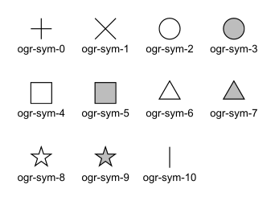

Feature Style Specification¶
Version 0.016 - 2018-12-03
1. Overview¶
This document defines the way feature style information (i.e. colors, line width, symbols, etc.) should be handled at the various levels in GDAL’s vector drivers (OGR).
The following GDAL vector drivers have varying levels of support for feature styles: DWG (libopencad), DWG (Teigha), DXF, KML (libkml), MapInfo, MicroStation DGN v7 and DGN v8, OpenJUMP JML and PDF.
1.1 Style is a property of Feature object¶
Conceptually, the feature style should be seen as a property of a feature. Even though some systems store style information in a special attribute, in GDAL it is more consistent to see the style as a property, just the same way the geometry of a feature is also a property.
This does not prevent us from storing the style information in an attribute when writing to some formats that have no provision for styles (e.g. E00). But then at the time such a dataset is opened through GDAL, the name of the attribute that contains style information should either be specified in some metadata, or be specified by the user.
Also, in the SFCOM interface, the style information will be stored in an attribute just like the geometry is.
1.2 Feature Styles can be stored at 2 levels¶
The style defines the way a feature should be drawn, but it is very common to have several features that share the same style. In those cases, instead of duplicating the style information on each feature, we will provide a more efficient way to share style information.
There are two levels at which style information can be found:
A dataset can have a table of pre-defined styles that can then be referred to by the layers or by the individual features. The mechanism for that is defined further down in this document.
A feature (OGRFeature object) can have its own complete style definition. Alternatively, a feature can be linked to a style in the dataset’s table of styles. This can save storage space when the same styles are reused often.
It should be possible to have style information stored at one or more of the various levels while working on a given dataset. The level(s) where the style is actually stored will depend on the most efficient approach for the format we are dealing with.
1.3 Drawing Tools¶
We define a small set of drawing tools that are used to build style definitions:
PEN: For linear styles
BRUSH: For filling areas
SYMBOL: Point symbols
LABEL: For annotations
Each drawing tool can take a number of parameters, all optional. The style syntax is built in a way that a system that cannot support all possible parameters can safely skip and ignore the parameters it does not support. This will also make it easy to extend the specification in the future without breaking existing code or applications.
A style can use a single tool, or use a combination of one or more tools. By combining the use of several tools in a style, one can build virtually any type of graphical representation. For instance, the SYMBOL tool can be used to place spaced symbols along a line. Also, the LABEL tool can be used to place text on a point, stretch it along a line, or even, by combining the PEN tool with the LABEL tool, use the line as a leader to the text label, and draw the text string on the last vertex of the line.
Of course, few systems can support all that. But the intention here is to have a style specification that is powerful and flexible enough to allow all types of formats to exchange style information with the least possible loss.
1.4 Feature attributes can be used by style definitions¶
In some cases, it might be useful for a style definition to refer to an attribute field on the feature for a given tool parameter’s value instead of having a hardcoded value inside the style itself.
Example of this are text angle, text string, etc… these values change for every single text label, but we can share the rest of the label style at the layer level if we lookup the angle and text string in an attribute on each feature.
The syntax of the style string provides a way that any parameter value can be either a constant value, or a lookup to an attribute field.
1.5 Tool parameter units¶
Several parameter values can be expressed in different measurement units depending on the file format you are dealing with. For instance, some systems express line width, or text height in points, other in pixels, and others use ground units. In order to accommodate all that, all parameters can be specified in one of the following units systems:
g: Map Ground Units (whatever the map coordinate units are)
px: Pixels
pt: Points (1/72 inch)
mm: Millimeters
cm: Centimeters
in: Inches
Some tools will have to be provided at the GDAL client level to simplify the conversion of any value from one units system to another. This would imply that the GDAL client has to specify a map scale so that conversions from ground units to paper/pixel units can be performed.
2. Feature Style String¶
As was mentioned earlier, styles definitions will usually be stored as strings, either in a per-layer (or per-dataset) table, or directly in the features.
2.1 Examples¶
Here are some example style definition strings:
A 5 pixels wide red line:
PEN(c:#FF0000,w:5px)A polygon filled in blue, with a black outline:
BRUSH(fc:#0000FF);PEN(c:#000000)A point symbol:
SYMBOL(c:#00FF00,id:"points.sym-45,ogr-sym-7")A text label, taking the text string from the “text_attribute” attribute field:
LABEL(f:"Times New Roman",s:12pt,t:{text_attribute})"
Here is what a style table that contains all the above styles could look like:
road: PEN(c:#FF0000,w:5px)
lake: BRUSH(fc:#0000FF);PEN(c:#000000)
campsite: SYMBOL(c:#00FF00,id:"points.sym-45,ogr-sym-7")
label: LABEL(f:"Times New Roman",s:12pt,t:{text_attribute})
Then individual features can refer to styles from the table above using the “@” character followed by the style name in their style property.
For instance, a feature with its style set to “@road” would be drawn as a red line.
2.2 Style String Syntax¶
Each feature object has a style property (a string):
<style_property> = "<style_def>" | "" | "@<style_name>" | "{<field_name>}"
<style_def>is defined later in this section.An empty style string means that the feature’s style is unspecified. It does not indicate that the feature is invisible – an invisible feature may be indicated using a fully transparent color, like PEN(c:#00000000).
@<style_name>is a reference to a predefined style in the layer or the dataset’s style table. The layer’s table is looked up first, and if style_name is not found there then the dataset’s table will be looked up.Finally,
{<field_name>}means that the style property should be read from the specified attribute field.
The <style_def> is the real style definition. It is a combination of 1 or more style parts separated by semicolons. Each style_part uses a drawing tool to define a portion of the complete graphical representation:
<style_def> = <style_part>[;<style_part>[;...]]
<style_part> = <tool_name>([<tool_param>[,<tool_param>[,...]]])
<tool_name> = name of a drawing tool, for now: PEN | BRUSH | SYMBOL | LABEL
<tool_param> = <param_name>:<param_value>
<param_name> = see list of parameters names for each drawing tool
<param_value> = <value> | <value><units>
<value> = "<string_value>" | <numeric_value> | {<field_name>}
<units> = g | px | pt | mm | cm | in
By default, style parts are drawn in the order that they appear in the style_def string unless each part is assigned a different level parameter value (see the level parameter definition).
All drawing tool parameters are optional. So it is legal to have a style_part with an empty drawing tool parameter list (e.g. “PEN()”). For each parameter that does not have any specified value, it is up to the client application to use its own default value. This document provides advisory default values for most parameters, but it is not mandatory for an application to use those default values.
When {<field_name>} is used for a tool_param value, several options are available with respect to the units. The units can be specified after the field name as in PEN(c:#FF0000,w:{line_width}pt) or can be left unspecified as in PEN(c:#FF0000,w:{line_width}). In the first case, the default units will be points (pt), but if the attribute field line_width contains a value followed by a units abbreviation (e.g. “5px”) then the units specified in the attribute fields have precedence (in this case pixels). Note that the attribute field does not have to contain a units value and probably won’t in most cases; it is just an optional feature to be able to override the default units from inside an attribute field’s value.
2.3 Pen Tool Parameters¶
Applicable geometry types:
Point: When applied to a point, a PEN tool can only define the color and the size of the point to draw.
Polyline: This is the most obvious case.
Polygon: Defines the way the outline of a polygon should be drawn.
Here is the current list of PEN tool parameters. While this is sufficient to cover all the cases that we have encountered so far, new parameters might be added in the future to handle new types of graphical representation. Note again that all parameters are optional:


2.4 Brush Tool Parameters¶
Applicable geometry types:
Point: Not applicable.
Polyline: Not applicable.
Polygon: Defines the way the surface of a polygon is filled.
Here is the current list of BRUSH tool parameters. Note again that that this list may be extended in the future, and all parameters are optional:
param_name |
Description |
|---|---|
fc |
Brush ForeColor, expressed
in hexadecimal (#RRGGBB[AA]).
Used for painting the brush
pattern itself.
[AA] the last 2 digits define
the alpha channel value, with 0
being transparent and FF being
opaque. The default for [AA] is
FF (opaque).
Suggested default: 50% grey
(c:#808080)
Example: BRUSH(fc:#FF0000)
|
bc |
Brush BackColor, expressed
in hexadecimal (#RRGGBB[AA]).
Used for painting the area
behind the brush pattern.
[AA] the last 2 digits define
the alpha channel value, with 0
being transparent and FF being
opaque. The default for [AA] is
FF (opaque)
Suggested default: transparent
(c:#FFFFFF00)
Example:
BRUSH(fc:#FF0000,bc:#FFEEDD)
|
id |
Brush Name or Brush Id - Comma-delimited list of brush names or ids. The names in the comma-delimited list of ids are scanned until one is recognized by the target system. Brush Ids can be either system-specific ids (see further below) or be one of the pre-defined OGR brush ids for well known brush patterns. The id parameter should always include one of the OGR ids at the end of the comma-delimited list of ids so that an application never has to rely on understanding system-specific ids. Here is the current
list of OGR brush ids (this
could grow over time):
Like with Pen Ids, system-specific brush ids are very likely to be meaningful only to that specific system that created them. The ids should start with the system’s name, followed by a dash (-), followed by whatever information is meaningful to that system (a number, a name, a filename, etc.). The following conventions will be used for common system-specific brush ids:
Other conventions may be added in the future (such as vector symbols, WMF, etc). |
a |
Angle - Rotation angle (in degrees, counterclockwise) to apply to the brush pattern. |
s |
Size or Scaling Factor - Numeric value with or without units. If units are specified, then this value is the absolute size to draw the brush or symbol. If no units are specified then it is taken as a scaling factor relative to the symbol’s default size. |
dx, dy |
Spacing, expressed as a numeric value with units (g, px, pt, mm, cm, in) If filling an area using point symbols, these values will define the spacing to use between them. “dx” is the horizontal distance between the center of two adjacent symbols and “dy” is the vertical distance. The default is to use the symbol’s bounding box width and height for dx and dy respectively. |
l |
Priority Level - Numeric value defining the order in which style parts should be drawn. Lower priority style parts are drawn first, and higher priority ones are drawn on top. If priority level is unspecified, the default is 1. |
2.5 Symbol Tool Parameters¶
Applicable geometry types:
Point: Place a symbol at the point’s location
Polyline: Place symbols along the polyline, either at each vertex, or equally spaced.
Polygon: Place the symbols on the outline of the polygon.
Here is the current list of SYMBOL tool parameters. Note again that that this list may be extended in the future, and all parameters are optional:
param_name |
Description |
|---|---|
id |
Symbol Name or Id - Comma-delimited list of symbol names or ids. The names in the comma-delimited list of ids are scanned until one is recognized by the target system. Symbol Ids can be either system-specific ids (see further below) or be one of the pre-defined OGR symbol ids for well known symbols. The id parameter should always include one of the OGR ids at the end of the comma-delimited list of ids so that an application never has to rely on understanding system-specific ids.  Here is the current
list of OGR symbol ids (this
could grow over time):
Like with Pen Ids, system-specific symbol ids are very likely to be meaningful only to that specific system that created them. The ids should start with the system’s name, followed by a dash (-), followed by whatever information is meaningful to that system (a number, a name, a filename, etc.). The following conventions will be used for common system-specific symbol ids:
Other conventions may be added in the future (such as vector symbols, WMF, etc). |
a |
Angle - Rotation angle (in degrees, counterclockwise) to apply to the symbol. |
c |
Symbol Color, expressed in
hexadecimal (#RRGGBB[AA])
[AA] the last 2 digits define
the alpha channel value, with 0
being transparent and FF being
opaque. The default for [AA] is
FF (opaque)
Suggested default symbol color:
black (c:#000000)
Example: SYMBOL(c:#FF0000)
|
o |
Symbol Outline Color,
expressed in hexadecimal
(#RRGGBB[AA]).
If this parameter is set, an
additional halo or border of
this color is drawn around the
symbol.
|
s |
Size or Scaling Factor - Numeric value with or without units. If units are specified, then this value is the absolute size to draw the symbol. If no units are specified then it is taken as a scaling factor relative to the symbol’s default size. |
dx, dy |
X and Y offset of the symbol’s insertion point, expressed as a numeric value with units (g, px, pt, mm, cm, in) Applies to point geometries, and to symbols placed at each vertex of a polyline. |
ds, dp, di |
Spacing parameters for symbols spaced along a line, expressed as a numeric value with units (g, px, pt, mm, cm, in). “ds” is the step to use when placing symbols along the line. By default, symbols applied to a feature with a line geometry are placed at each vertex, but setting “ds” triggers the placement of symbols at an equal distance along the line. “ds” has no effect for a feature with a point geometry. “dp” can be used together with “ds” to specify the perpendicular distance between the symbols’ center and the line along which they’re placed. Finally, “di” can be used to specify an initial offset from the beginning of the line. Example: SYMBOL(id:123, s:5, di:5px, ds:50px) |
l |
Priority Level - Numeric value defining the order in which style parts should be drawn. Lower priority style parts are drawn first, and higher priority ones are drawn on top. If priority level is unspecified, the default is 1. |
f |
Font Name - Comma-delimited list of fonts names. Works like the CSS font-family property: the list of font names is scanned until a known font name is encountered. Example: SYMBOL(c:#00FF00,s:12pt,id:”font- sym-75,ogr-sym-9”,f:”MapInfo_Cart ographic”) |
2.6 Label Tool Parameters¶
Applicable geometry types:
Point: Place a text label at the point’s location
Polyline: Place text along the polyline.
Polygon: Place a label at the centroid of the polygon. All parameters behave exactly as if the geometry was a point located at the polygon’s centroid.
Here is the current list of LABEL tool parameters. Note again that that this list may be extended in the future, and all parameters are optional:
param_name |
Description |
|---|---|
f |
Font Name - Comma-delimited list of fonts names. Works like the CSS font-family property: the list of font names is scanned until a known font name is encountered. Example: LABEL(f:”Noto Sans, Helvetica”, s:12pt, t:”Hello World!”) |
s |
Font Size, expressed as a numeric value with units (g, px, pt, mm, cm, in). In the CAD world, font size, or “text height”, determines the height of a capital letter – what typographers call “cap height”. But in the worlds of typesetting, graphics and cartography, font size refers to the “em height” of the font, which is taller than the cap height. This means that text assigned a height of 1 inch in a DXF file will look larger (often about 45% larger) than 72-point text in a PDF file or MapInfo map. At present, GDAL vector drivers treat the “s:” style string value as whichever font size measurement (cap height or em height) is used natively by that format, which may result in incorrect text sizing when using the ogr2ogr tool. This parameter could be subject to clearer specification in the future. |
t |
Text String - Can be a constant string, or a reference to an attribute field’s value. If a double-quote character or backslash () character is present in the string, it is escaped with a backslash character before it. Examples: LABEL(f:”Arial, Helvetica”, s:12pt, t:”Hello World!”) LABEL(f:”Arial, Helvetica”, s:12pt, t:”Hello World with escaped "quotes” and \backslash!”) LABEL(f:”Arial, Helvetica”, s:12pt, t:{text_attribute}) |
a |
Angle - Rotation angle (in degrees, counterclockwise). |
c |
Text Foreground Color, expressed in hexadecimal (#RRGGBB[AA]) Suggested default: black (c:#000000) |
b |
Text Background Color - Color of the filled box to draw behind the label, expressed in hexadecimal (#RRGGBB[AA]). No box drawn if not set. |
o |
Text Outline Color - Color of the text outline (halo in MapInfo terminology), expressed in hexadecimal (#RRGGBB[AA]). No outline if not set. |
h |
Shadow Color - Color of the text shadow, expressed in hexadecimal (#RRGGBB[AA]). No shadow if not set. |
w |
Stretch - The stretch factor changes the width of all characters in the font by the given percentage. For example, a setting of 150 results in all characters in the font being stretched to 150% of their usual width. The default stretch factor is 100. |
m |
Label Placement Mode - How the text is drawn relative to the feature’s geometry. “m:p” - The default. A simple label is attached to a point or to the first vertex of a polyline. “m:l” - Text is attached to the last vertex of a polyline. A PEN tool can be combined with this LABEL tool to draw the polyline as a leader to the label. “m:s” - Stretch the text string along a polyline, with an equal spacing between each character. “m:m” - Place text as a single label at the middle of a polyline (based on total line length). “m:w” - One word per line segment in a polyline. “m:h” - Every word of text attached to polyline is placed horizontally in its segment, anchor point is a center of segment. “m:a” - Every word of text attached to polyline is stretched to fit the segment of polyline and placed along that segment. The anchor point is a start of a segment. |
p |
|
dx, dy |
X and Y offset of the label’s insertion point, expressed as a numeric value with units (g, px, pt, mm, cm, in). Applies to text placed on a point, or at each vertex of a polyline. |
dp |
Perpendicular Offset for labels placed along a line, expressed as a numeric value with units (g, px, pt, mm, cm, in). “dp” specifies the perpendicular distance between the label and the line along which it is placed. If the offset is negative then the label will be shifted left of the main segment, and right otherwise. |
bo |
Bold - Set to 1 for bold text. Set to 0 or omitted otherwise. |
it |
Italic - Set to 1 for italic text. Set to 0 or omitted otherwise. |
un |
Underline - Set to 1 for underlined text. Set to 0 or omitted otherwise. |
st |
Strikethrough - Set to 1 for struck-through text. Set to 0 or omitted otherwise. |
l |
Priority Level - Numeric value defining the order in which style parts should be drawn. Lower priority style parts are drawn first, and higher priority ones are drawn on top. If priority level is unspecified, the default is 1. |
 Anchor Position - A value from 1 to 12 defining the label’s position relative to the point to which it is attached. There are four vertical alignment modes: baseline, center, top and bottom; and three horizontal modes: left, center and right. The scheme is shown at right.
Currently, the precise interpretation of these values (for example, whether accents on uppercase letters sit above or below the alignment point with p:7) differs from file format to file format. This parameter could be subject to clearer specification in the future.
Anchor Position - A value from 1 to 12 defining the label’s position relative to the point to which it is attached. There are four vertical alignment modes: baseline, center, top and bottom; and three horizontal modes: left, center and right. The scheme is shown at right.
Currently, the precise interpretation of these values (for example, whether accents on uppercase letters sit above or below the alignment point with p:7) differs from file format to file format. This parameter could be subject to clearer specification in the future.{kind=link}
2.7 Styles Table Format¶
For file formats that support tables of styles, then the predefined styles would be stored in that format.
For file formats that do not support tables of styles, then the style table could be stored in a text file with a .ofs (OGR Feature Styles) extension and the same basename as the dataset. This would apply to formats like Esri Shapefile.
Here is an example of a .ofs file:
#OFS-Version: 1.0
#StyleField: "style"
DefaultStyle: PEN(c:#000000)
road: PEN(c:#FF0000,w:5px)
lake: BRUSH(fc:#0000FF);PEN(c:#000000)
campsite: SYMBOL(c:#00FF00,id:"points.sym-45,ogr-sym-7")
label: LABEL(f:"Times New Roman",s:12pt,t:{text_attribute})
The first line is a signature with a version number, which must be present.
The second line (StyleField: “style”) is the name of the attribute field in which the Feature Style String is stored for each object in the corresponding layer. This is optional, if not set, then the objects in the layer will all share the same style defined in DefaultStyle.
The third line (DefaultStyle:…) defines the style that applies by default to all objects that have no explicit style.
Then the list of style definitions follow.
2.8 Using OGR SQL to transfer the style between the data sources¶
You can use the OGR_STYLE special field to extract the feature level style, and ogr2ogr can be used to transfer the style string between data sources according to the following example:
ogr2ogr -f "ESRI Shapefile" -sql "select *, OGR_STYLE from rivers" rivers.shp rivers.tab
Without specifying the length of the style field, the output driver may truncate the length to a default value. Therefore it may be necessary to specify the target length manually, like:
ogr2ogr -f "ESRI Shapefile" -sql "select *, CAST(OGR_STYLE AS character(255)) from rivers" rivers.shp rivers.tab
OGR is aware of using the OGR_STYLE field if it exists, and OGRFeature::GetStyleString will return the value of this field if no style string has been specified programmatically.
3. OGR Support Classes¶
The OGRFeature class has member functions
OGRFeature::GetStyleString(), OGRFeature::SetStyleString() and OGRFeature::SetStyleStringDirectly()
which may be used to interact with a feature’s style string as a C-style
string. Additionally, there are OGRFeature::GetStyleTable(), OGRFeature::SetStyleTable() and
OGRFeature::SetStyleTableDirectly() for managing style tables as instances of the
OGRStyleTable class.
The OGRLayer and GDALDataset classes also have OGRLayer::GetStyleTable(),
OGRLayer::SetStyleTable() and OGRLayer::SetStyleTableDirectly() member functions.
To parse style strings, the OGRStyleMgr class is used. Each style tool in the string
is accessed as an instance of the OGRStyleTool class. Lastly, four helper classes exist,
one for each tool (OGRStylePen,
OGRStyleBrush,
OGRStyleSymbol,
OGRStyleLabel), with each available
parameter represented by a getter and setter member function. To
understand these classes better, it may be useful to read the
ogr_featurestyle.h
and
ogrfeaturestyle.cpp
code files.
Here is some example C++ code:
OGRStyleTable oStyleTable;
OGRStyleMgr *poStyleMgr = new OGRStyleMgr(&oStyleTable);
// Create a new style in the style table by specifying the whole style string
if (poStyleMgr->AddStyle("@Name","PEN(c:#123456;w:10px);BRUSH(c:#345678)"))
{
poStyleMgr->SetFeatureStyleString(poFeature,"@Name",TRUE)
// or
poStyleMgr->SetFeatureStyleString(poFeature,"PEN(c:#123456,w:10px);BRUSH(c:#345678)",FALSE)
}
oStyleTable->SaveStyleTable("ttt.tbl");
// Create a new style in the style table by specifying each tool (part) as a string
poStyleMgr->InitStyleString();
poStyleMgr->AddPart("PEN(c:#123456,w:10px)");
poStyleMgr->AddPart("BRUSH(c:345678)");
poStyleMgr->AddStyle("@Name");
poStyleMgr->SetFeatureStyleString(poFeature,"@Name",TRUE);
oStyleTable->SaveStyleTable("ttt.tbl");
// Create a new style in the style table using the style tool helper classes
OGRStyleTool *poStylePen = new OGRStylePen;
poStylePen->SetColor("#123456");
poStylePen->SetUnit(OGRSTUPixel);
poStylePen->SetWidth(10.0);
poStyleMgr->AddPart(poStylePen);
delete poStylePen;
// Reading a style
OGRStyleTool *poStyleTool;
poStyleMgr->GetStyleString(poFeature);
for (int iPart = 0; iPart < poStyleMgr->GetPartCount(); iPart++)
{
poStyleTool = GetPart(iPart);
switch (poStyleTool->GetType())
{
case OGRSTCPen:
poStylePen = (OGRStylePen *)poStyleTool;
pszColor = poStylePen->Color(bDefault);
if (bDefault == FALSE)
poStylePen->GetRGBFromString(pszColor, nRed, nGreen,
nBlue, nTrans);
else
// Color not defined
dfWidth = poStylePen->Width(bDefault);
if (bDefault == FALSE)
// Use dfWidth
else
// dfWidth not defined
:
:
}
}
REVISION HISTORY¶
Version 0.016 - 2018-12-03 - Andrew Sudorgin Restored and documented font property for point symbols
Version 0.015 - 2018-01-08 - Alan Thomas Update outdated material; minor changes to BRUSH ‘id’ and LABEL ‘t’, ‘bo’, ‘it’, ‘un’, ‘st’; clarify BRUSH ‘fc’, ‘bc’, SYMBOL ‘o’ and LABEL ‘s’, ‘w’, ‘p’
Version 0.014 - 2011-07-24 - Even Rouault Mention the escaping of double-quote characters in the text string of a LABEL (ticket #3675)
Version 0.013 - 2008-07-29 - Daniel Morissette Added ‘o:’ for font point symbol outline color (ticket #2509)
Version 0.012 - 2008-07-21 - Daniel Morissette Added ‘o:’ for text outline color and updated ‘b:’ to be specifically a filled label background box (ticket #2480)
Version 0.011 - 2008-02-28 - Tamas Szekeres Note about OGR SQL to transfer the style between the data sources
Version 0.010 - 2006-09-23- Andrey Kiselev Added label styles ‘w’, ‘st’, ‘h’, ‘m:h’, ‘m:a’, ‘p:{10,11,12}’
Version 0.009 - 2005-03-11- Frank Warmerdam Remove reference to OGRWin, move into ogr distribution
Version 0.008 - 2001-03-21- Frank Warmerdam Fix minor typos (h:12pt instead of s:12pt in examples)
Version 0.008 - 2000-07-15 - Stephane Villeneuve Remove style table in Layer. Add forecolor and backcolor to brush.
Version 0.007 - 2000-06-22 - Daniel Morissette Fixed typo and added offset param for PEN.
Version 0.006 - 2000-06-20 - Daniel Morissette Added the OGR-Win idea and made small changes here and there.
Version 0.005 - 2000-06-12 - Daniel Morissette Allow passing of comma-delimited list of names in PEN’s “id” parameter. Defined system-independent pen style names.
Version 0.004 - 2000-06-09 - Stephane Villeneuve Added PEN cap and join parameters More clearly defined the API
Version 0.003 - 2000-02-15 - Daniel Morissette First kind-of-complete version.